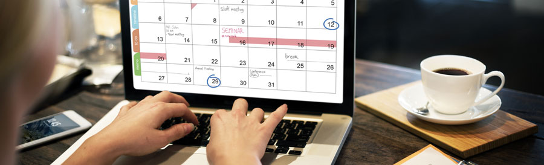

1 Analysing how we spend our time at work
The first step in the process of improving our time management is to analyse how we spend our time now. We need to use a planner or diary to note down activities throughout the day so that we can see where the time is being used. At the end of the week, we can take some time to look at the notes and do a thorough review.
We may be unaware of how much time we spend, or waste, on relatively unproductive activities. Our ordinary activities can also waste time if we do not approach them with clarity and focus.
After analysing current activities, we can identify areas of strength, which can be developed further, and areas of weakness that need to be improved. This can be followed by plans about how we can improve our overall productivity, efficiency and well-being.
Areas of our working life to consider can include, for example:
Breaks for coffee, tea etc
We all need human contact, breaks from work and time to move around if we spend long periods in one position, often at a desk. However, it is useful to make a note of these short breaks to see their impact over a day or a week.
Meetings and appointments
Meetings can go on for a long time and be an inefficient use of everyone’s time. We need to look at the meetings we have attended during the week and maybe ask a few questions:
- Do we need to meet this often?
- Can we cover all of the points in a weekly review rather than having a meeting every day?
- Do all of the people need to be there? Colleagues have busy schedules, too. If there are too many attendees, some people may have been unable to take part and be heard.
- Would a different communication method be more effective, such as email?
- Are meetings based on habit rather than need?
- Did the meeting run to time?
Informal meetings or chats with colleagues
Well-meaning colleagues can be a cause of time wasting, with long chats in the kitchen or the corridor, asking the wrong person for advice and guidance, or being needy and afraid of making decisions on their own.
Workload and task allocation
We can all fall into the trap of spending too much time on tasks that can or should be done by someone else. Some tasks can be delegated – eg you may need to dedicate time to train a new person and monitor and review their work, but the time saved in the long run is worth the investment.
Insufficient preparation and organisation
If we are not properly prepared and organised at work, we can waste a great deal of time looking for things, doing things more than once or missing opportunities altogether. Someone who is disorganised and chaotic can also have a negative impact on colleagues, and they are likely to resent their own time being wasted.
Deadlines
When preparing for deadlines it is important to organise and plan some projects and tasks in stages. A major project with a long deadline might need a great deal of work, so it is important to achieve smaller deadlines and objectives along the way, so that we are not caught out and forced to work through the night to catch up at the last minute.
Inefficient communication
We need to control our communications and make sure that they are as efficient as possible, as this can save time and aggravation for ourselves and others. Emails in particular are seen as cumbersome and can affect efficiency if they are allowed to dominate work time.
A great deal of time can be wasted if paperwork is disorganised, with time spent moving it around and looking for things. Telephone calls can also be disruptive in some jobs, and they can interrupt the flow of other work and affect achievement levels.